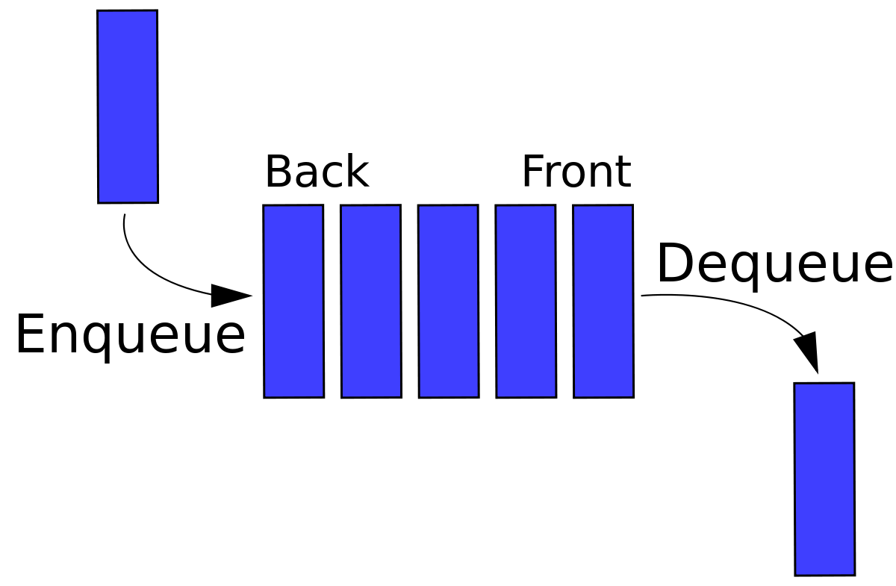

Queue is an abstract data structure, somewhat similar to Stacks. Unlike stacks, a queue is open at both its ends. One end is always used to insert data (enqueue) and the other is used to remove data (dequeue). Queue follows First-In-First-Out methodology, i.e., the data item stored first will be accessed first. enqueue: add (store) an item to the queue. dequeue remove (access) an item from the queue. isEmptyChecks if the queue is isEmpty. isFull Checks if the queue is full.

Step 1 − Check if the queue is full.
Step 2 − If the queue is full, produce overflow error and exit.
Step 3 − If the queue is not full, increment rear pointer to point the next empty space.
Step 4 − Add data element to the queue location, where the rear is pointing.
Step 1 - Check if the queue is empty.
Step 2 − If the queue is empty, produce underflow error and exit.
Step 3 − If the queue is not empty, access the data where front is pointing.
Step 4 − Increment front pointer to point to the next available data element.
here enqueue is the function which inserts the elements at the beginning in the beginning rear=0 and front=0 if queue is full return overflow else rear ← rear + 1 queue[rear] ← data //value will be inserted into the queue end procedure
dequeue is the function which deletes the elements in the beginning of the queue if queue is empty //rear will be equal to front only when the queue is empty return underflow else data = queue[front] //the value which came first will be deleted front ← front + 1 index of front shifts to the next position return true